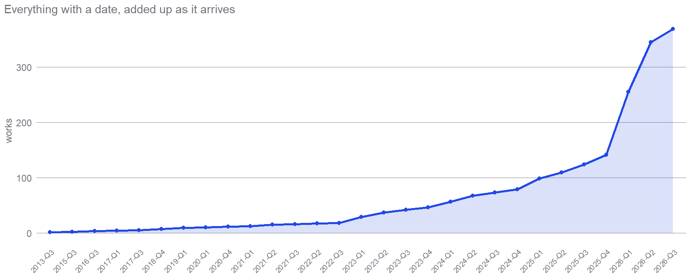
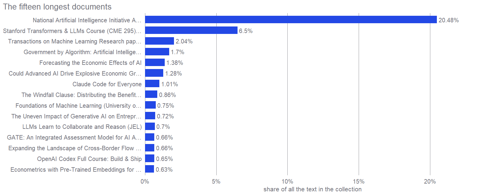

What a timeline of this field can and cannot show
The record floods in 2026, the fastest part of it carries no dates at all, and one document is a fifth of the text
Supplement
Every chart on this site that has time along the bottom rests on the same thing: a date attached to a document. That sounds unremarkable until you notice which documents have one. This page shows what the record looks like over time, and then shows the two places where a timeline of this field is guaranteed to mislead you.
The record floods in 2026
Of everything here that carries a usable date, 55.3% falls in the first half of 2026 alone. Some of that is the field genuinely accelerating. Some of it is the ordinary behaviour of any collection, which is that the newest material is the easiest to find and the oldest has already scrolled away. Both are true at once, and neither can be separated out.
The fastest part of the field has no dates
That chart leaves out four items in every ten.
273 of 661 items (41.4%) have no date the collection can trust, and for most of them that is not a gap in the record. It is the record. A tool’s home page, a course catalogue, a living guide that its author revises whenever the software changes: these are updated, not published. They have no issue date and never will.
That is the awkward part, because those are exactly the documents this field’s practical knowledge lives in. The layer moving fastest is the layer a timeline cannot see. Every chart above therefore under states the informal side of this field, and nothing can be done about it, since the missing dates do not exist to be recovered. They are shown here rather than dropped, so nobody mistakes the charts for a full picture.
A smaller version of the same problem: 27 items are known only to a year. They are filed in that year’s first half, which is a filing convention rather than a fact about when they appeared.
One document is a fifth of the text
The other trap is size. If you ask how much text this field produces, one document answers for a fifth of it.

The first bar is a piece of US legislation, 20.5% of every character in the collection. The second is the transcript of a course playlist. Neither tells you anything about how much economists write, and an average length that includes them is really a measurement of those two files.
So every statistic on this site about length caps how much any single document can contribute, at 167,745 characters. Only the longest one in twenty is affected, and the legislation is one of them. The uncapped headline for the whole collection is 5,980,973 words. Capped, it is 4,010,211. The honest thing is not to pick one but to say which one you mean.
There is one more wrinkle worth knowing about that biggest document. It is filed under the title “National Artificial Intelligence Initiative Act”, and its actual contents are the full committee report on a defence spending bill, of which that Act is one part. A flattering title on a mostly off topic file, sitting at the very top of the list. That is what a collection looks like when nobody has read all of it, which is every collection.